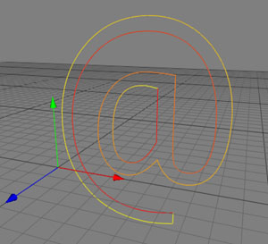

Spline
The Spline object is the father of every parametric spline object in Cheetah3D. To these objects belong the Circle, Rect, Text, etc. The objects of the Spline family will be used to create other geometry through creator objects like the Extrude or Lathe object.
Caution! The Spline object is the only object where the curve can be modified with the spline tools. If you want to modify the curve of a parametric spline object you first have to make it editable.
There are two ways to create a Spline object. The first is to use the "Create Spline" tool from the menu "Tools Spline
Spline Create Spline". The second way to create a Spline object is to make a parametric spline object editable. You can do this by selecting a parametric spline object in the object browser and then using the menu command "Objects
Create Spline". The second way to create a Spline object is to make a parametric spline object editable. You can do this by selecting a parametric spline object in the object browser and then using the menu command "Objects Make editable". Now the parametric spline object will lose it's parametric properties and will be transformed into a raw Spline object which is editable with the spline tools.
Make editable". Now the parametric spline object will lose it's parametric properties and will be transformed into a raw Spline object which is editable with the spline tools.

It is also possible to make the parametric spline object editable by double clicking onto the object icon in the object browser.
Every spline has a sequence. Each subpath starts with yellow and ends in red.

Properties
- Approximation angle: Measure of the quality of the tessellated spline curve. The lower the angle the higher the quality of the tessellated spline curve.
- Type: There are four different types of spline curves available, each with their own advantages.
- Bezierspline: Cubic bezier spline. This is the only curve type where the tangents have a usage. TrueType fonts are saved this way.
- Beziercurve: Bezier curve of the order n, where n is the number of path elements in the subpath.
- Linear: Linear interpolation between the control points.
- NURBS: Non Uniform Rational B-Spline.